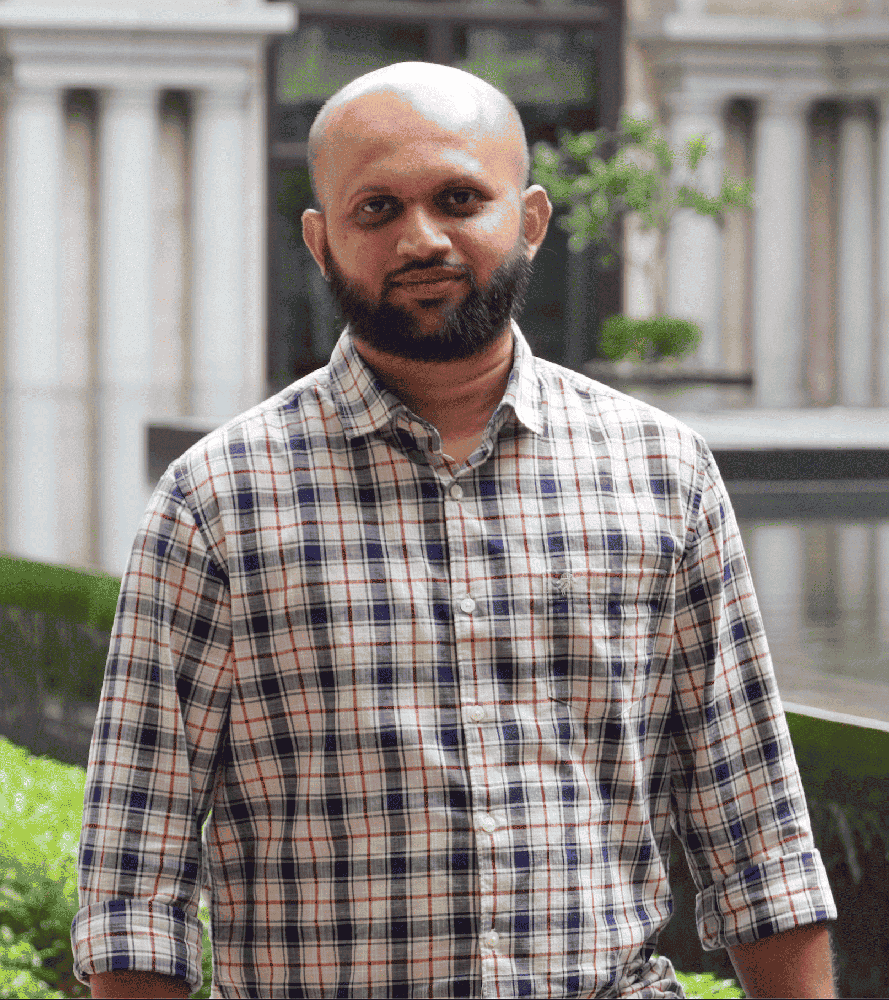

Staff SDET Engineer with 13+ years of experience leading quality engineering teams and architecting test automation frameworks at scale.
Expanding into AI / LLM quality engineering — red teaming agentic AI applications against OWASP-ASI threats, instrumenting evidence via LangSmith, and building production-style guardrails (input validation + PII redaction) for LLM agents.
Proficient in AI-augmented development workflows using Cursor IDE (Skills, Subagents, MCPs) and Notion AI for scaled test automation enablement and SDLC optimization.
Known for mentoring SDETs, driving shift-left adoption, and reducing production defects through scalable automation.
The Connected Forest SSO system secures user authentication across multiple applications with a single login, simplifies user management, integrates with identity providers, supports standard protocols, and ensures a seamless user experience.
Enterprise data synchronization platform ensuring real-time data consistency across multiple systems and applications within the Trimble ecosystem.
Lorenzo is a next-generation Electronic Medical Record (EMR) system used by NHS to provide real-time patient data to clinicians and administrators across care pathways. It integrates with patient administration and clinical systems for better decision-making and patient care.
Esurance, a leading auto insurance provider, offers online car insurance services. The project focused on validating critical business requirements like claims processing, policy administration, and customer support systems.
Steps 2.0 is a health tracking application used for tracking personal fitness and wellness goals (e.g., walking, running, cycling, weight loss).
Co-ordinated a team of 20 members in an all India level hackathon and made sure we won the Champions title for 3 consecutive years.
Pioneered the adoption of Cursor IDE workflows (Skills, Subagents, MCP) across the SDET organization, training 15+ engineers on AI-assisted test development and establishing reusable Cursor Skills for common QA patterns, reducing onboarding time for new automation engineers by ~50%.
Conducted the first internal red-team assessment of a Trimble agentic-AI application — uncovered a catastrophic credential disclosure (Emergency Bypass PIN) and a system_prompt_overwrite API exploit; implemented mitigating guardrails that eliminated 100% of the API-exploitation and SSRF attack surface.
Made India level presentations over the new explorations on QA grounds and have taken our Selenium/Cypress/RestAssured Automation Frameworks as horizontal services to various teams in Trimble India.
Reduced regression cycle by 90% with reusable test automation frameworks.
Implemented Containerization across all the QA Automation Projects in Trimble Forestry, thereby reducing the cost involved in achieving Parallel test execution.
Implemented a unified Real Time Dashboard using ElasticSearch and Kibana for all the QA Automation Projects across Trimble Forestry thereby providing all the Automation Projects a better/effective call to action.
Developed a Quality Gate that comprises of all the QA Automation process that gets executed on a day. This quality gate includes UI, API, Performance, Security tests getting executed by a single click or during a scheduled execution.
Led a team of 4+ SDETs, mentoring them into senior roles within 2 years.
College: St. Joseph's College of Engineering, Chennai
Year: 2009 – 2013